<mat-toolbar color = "primary">
  <span>
    <a routerLink = "/" >
      </a>
  </span>
  <span>
    <h1><a routerLink = "/" >Quizes</a></h1>
  </span>
  <span class="spacer"></span>
  <ul>
    <li>
      <a mat-button routerLink="/create" routerLinkActive="mat-accent">New Quiz</a>
    </li>
    <li>
      <a mat-button routerLink="" routerLinkActive="mat-accent">Login</a>
    </li>
  </ul>
</mat-toolbar>
